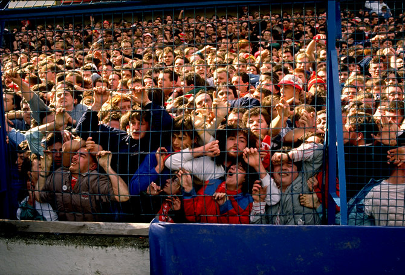
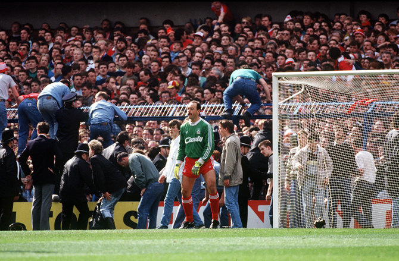
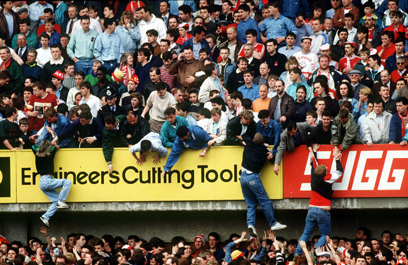
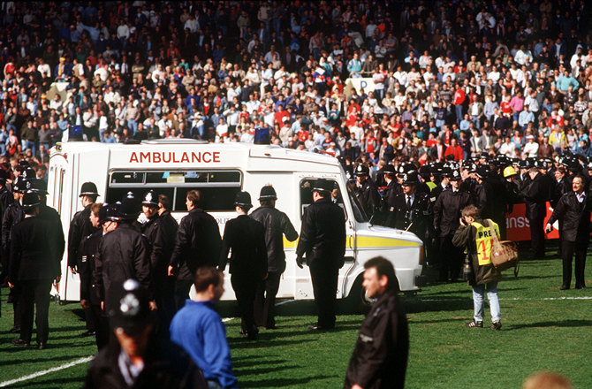
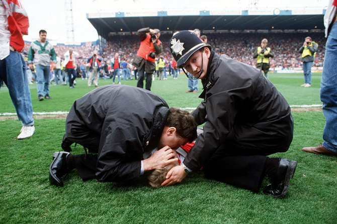
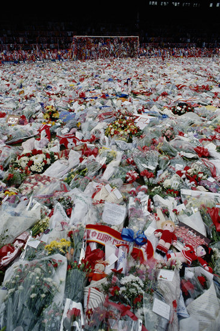
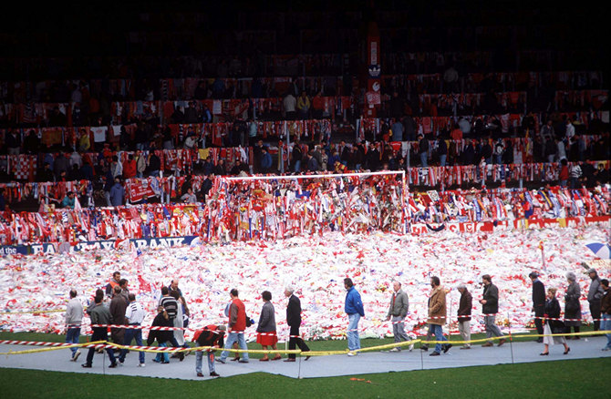

История трагедии
15 апреля 1989 года произошла самая чудовищная из всех трагедий в истории английского футбола. 94 болельщика клуба "Ливерпуль" были задавлены насмерть на стадионе клуба "Шеффилд Уэнсдей" Хиллсборо — во время полуфинального матча Кубка Англии против "Ноттингем Форест". Ещё двое пострадавших скончались позже.
Ужасные события, произошедшие на Хиллсборо, стали следствием целой серии грубейших ошибок, допущенных непрофессионально сработавшими полицейскими, не сумевшими совладать с толпой основательно выпивших болельщиков. Матч должен был начаться в три часа дня, и его организаторы, учитывая слабую пропускную способность турникетов стадиона, попросили фанов встречавшихся команд подойти пораньше. Однако их просьба не была услышана. Более того, когда до игры оставалось минут десять, вместе с болельщиками, имевшими на руках билеты, к арене подтянулись порядка четырёх тысяч тех, кто хотел прорваться на футбол бесплатно.
В результате перед турникетами скопилось небывалое количество народа, безбилетников заворачивали обратно, они мешали другим проходить контроль. Матч уже начинался, а на трибуне, предназначенной для болельщиков "Ливерпуля", оставалось много свободных мест. Люди находившиеся вне пределов стадиона, принялись скандировать "Мы хотим на футбол!" и напирали на стоявших перед ними. Появились первые признаки давки. И тогда один из старших офицеров полиции принял роковое решение. "У всех есть билеты? — спросил он. — Поднимите их!". Когда болельщики выполнили его требование, он, посчитав, что безбилетников в общей массе немного, приказал своим подчинённым открыть ворота и пустить всех без проверки.
 В ту же секунду раздался стартовый свисток арбитра. Находившиеся снаружи болельщики ринулись в центральный сектор трибуны и прижали тех, кто там давным-давно расположился, к решётке, отделяющей зрителей от поля. Полиция среагировала не сразу: ей показалось, что фаны решили занять ряды поближе к газону. Игра продолжалась, а на трибуне от удушья погибали люди. Лишь на шестой минуте, заподозрив неладное, стражи порядка дали арбитру команду прекратить матч.
Если бы на этом всё закончилось! Увы, за пределами стадиона оставалось ещё очень много болельщиков, которые, не подозревая, что творится впереди, своим агрессивным поведением осложняли ситуацию. К тому же все места на трибуне были стоячими, а билеты, соответственно, входными. Так что с точки зрения полицейских ситуация выглядела абсурдной. Они отказывались понимать, как может возникнуть давка на трибуне, по бокам которой, в районе угловых флагов, полно свободного пространства. Но дело заключалось в том, что все пытались втиснуться в более удобный для наблюдения за игрой центральный сектор. Учитывая же, что из-за массы безбилетников количество болельщиков значительно превысило допустимые нормы, те, кто пришёл пораньше, оказались в ловушке.
 Положение могли разрядить стюарды, которые должны были контролировать приток людей и по мере заполнения одного сектора переправлять болельщиков в другие. Однако это сделано не было. Почему? Вопрос остался без ответа. Потом стюарды утверждали, что они выполняли свою работу, но пьяная толпа их не слушала. Болельщики же заявляли, что никого не видели и шли туда, куда считали нужным.После остановки матча всё ещё не понимавшие, что происходит, полицейские допустили вторую ошибку. Попытки болельщиков взобраться на решётку и спасти свою жизнь они трактовали, как организованный прорыв на поле, и стали дубинками загонять фанов обратно. Стражи порядка всё ещё не понимали, каким образом может возникнуть давка на не до конца заполненной трибуне. Спустя пару минут некоторые из рядовых полицейских, находившихся поблизости от эпицентра, сообразили, что к чему, и начали помогать болельщикам. Однако офицеры, располагавшиеся на расстоянии не менее полусотни метров, отдали третью ошибочную команду: всем отойти от решётки, занять оборону и никого не пропускать. Они всё ещё думали, будто фаны "Ливерпуля" лезут на поле лишь для того, чтобы добежать до противоположной трибуны и устроить драку с болельщиками "Ноттингем Форест"!
И без того критическое положение усугубило отсутствие на стадионе достаточного количества медицинского персонала и носилок. Болельщики, отчаявшись получить помощь, выламывали рекламные щиты, клали на них своих покалеченных товарищей и пытались хотя бы оттащить их к центру поля, а выстроившиеся в ряд полицейские, выполняя приказ, били фанов дубинками. 94 болельщика умерли прямо на стадионе: самому младшему из них исполнилось десять лет. Ещё 766 получили ранения, порядка трёхсот из них попали в больницу. Спустя четверо суток скорбный список пополнился ещё одним умершим, а в марте 1993 года "Хиллсборо" забрал свою последнюю жертву: скончался Тони Блэнд, всё это время не выходивший из комы...
Проведённое на государственном уровне расследование трагедии виновных не выявило. Полицейские оправдывались тем, что, не пропусти они людей на трибуну, жертв оказалось бы значительно больше — у входа на стадион. К тому же многие из них давали ложные показания, старались выгородить друг друга. Судебное разбирательство длилось несколько лет, до тех пор, пока главного обвиняемого — офицера, отдавшего команду открыть ворота — не освободили от ответственности по состоянию здоровья. А ведь трагедии могло не быть вовсе, если бы полиция, видя, что не успевает осуществить пропуск на стадион болельщиков, всего лишь попросила бы отсрочить начало матча...
Впрочем, кое-какие принципиальные уроки из событий на Хиллсборо английские власти извлекли. Во-первых, правительство Англии обязало клубы отказаться от так называемых террас, оборудовать свои стадионы креслами и продавать билеты только с указанием ряда и места. А, во-вторых, было принято решение убрать ограждения, отделяющие трибуны от поля, поскольку при определённых обстоятельствах они представляли угрозу жизни болельщиков.
Только 23 года спустя 12 сентября 2012 г. был опубликован доклад независимой комиссии по расследованию обстоятельств трагедии на стадионе Хиллсборо, приведшей к гибели 96 человек. А Премьер министр Соединённого королевства Великобритании и Северной Ирландии Джеймс Кэмерон принёс от имени Правительства извинения семьям погибших.
 